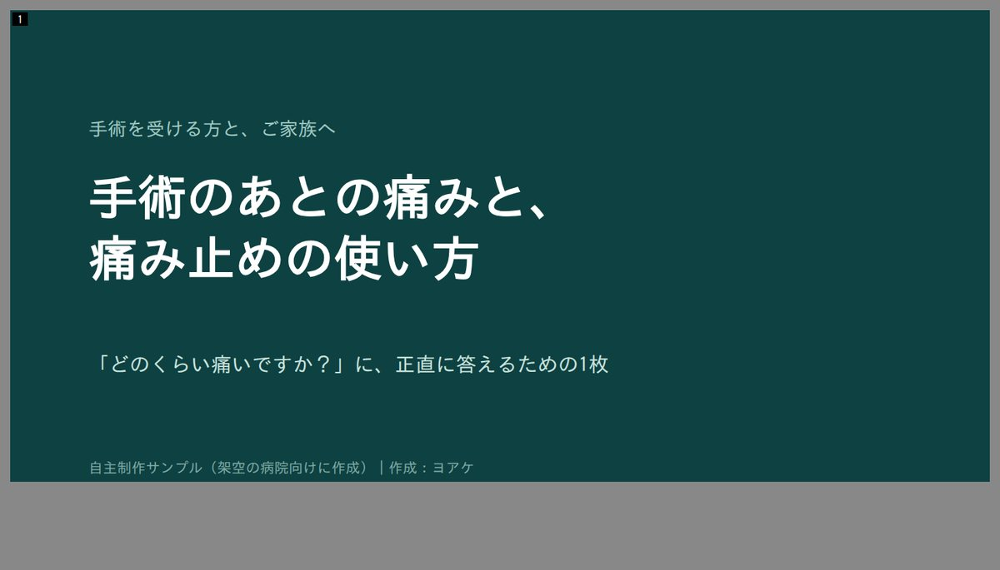
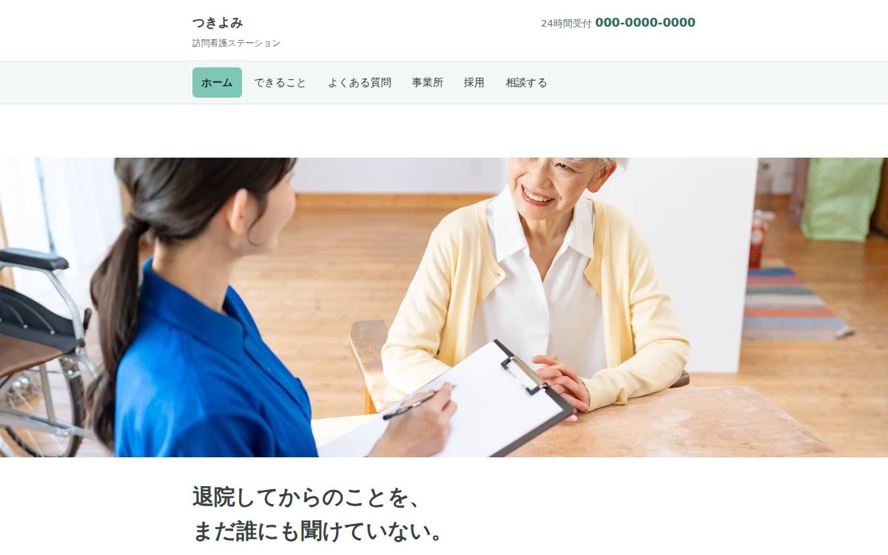

専門知識を、患者さんが使える言葉へ。
手術室で実際に聞かれた質問を出発点に、「手術のあとの痛みと、痛み止めの使い方」をA4一枚にしました。患者さんが我慢せず、自分から伝えられることを目標にした自主制作です。
資料を見る ↗Personal site
看護師として働きながら、
最近は、
ここには、


What I can help with
「何を頼めばいいか」まで決まっていなくても、今困っている場面から一緒に整理します。
医療や制度の内容を、患者さん・利用者さん・読者に届く文章、資料、Webへ。専門用語をそのまま置かず、読む人が使える形まで考えます。
患者向け資料・Webの実例を見る ↓新人教育やマニュアル・チェックリストづくりに関わってきた経験から、頭の中にある判断や手順を、他の人が使える形へ整理します。
これまでの経験を見る ↓AIの機能からではなく、まず仕事の流れを見ます。どこで止まるのか、人が判断すべき場所はどこかを分けて、小さく試します。これは自分自身の業務で続けている実践が土台です。
考え方を記事で読む ↗Selected works
仕事でも、自主制作でも、
手術室で実際に聞かれた質問を出発点に、「手術のあとの痛みと、痛み止めの使い方」をA4一枚にしました。患者さんが我慢せず、自分から伝えられることを目標にした自主制作です。
資料を見る ↗利用するご家族と、働く看護師で入口を分けた「つきよみ訪問看護ステーション」。それぞれが自分の状況から情報へたどれるようにした架空の自主制作Webです。
サイトを見る ↗案件探し、記事制作、レビュー、振り返りを自分の業務で試しながら、AIに任せる場所と人が判断する場所を分けています。他社へのAI導入実績ではなく、自分自身の仕事を実験台にした運用です。
関連する記事を読む ↗Selected thoughts
作ったものだけでは分からない、
同じ部屋にいたのに、
速く考えられる人になるより、
AIの答えを正解として受け取らず、
About / Values
小児科病棟、
仕事の中では、
仕事の外では、
大切にしていること
Next
気になった入口からどうぞ。